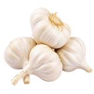

होम / लहसुन

लहसुन का भाव आज | Garlic Mandi Price Today
लहसुन के आज के उपलब्ध मंडी भाव देखें—मंदसौर, नीमच, इंदौर और कोटा के मॉडल, न्यूनतम और अधिकतम रेट और प्रति किलो भाव।
नीचे मंडी-वार सूची में लहसुन के उपलब्ध भाव दिए हैं। मंडी के नाम पर क्लिक करके उस मंडी की दूसरी फसलों के भाव भी देख सकते हैं।
लहसुन के भाव: किस्मों, ग्रेडिंग, बेंचमार्क मंडियों और वार्षिक मूल्य चक्र के आधार पर
राम राम किसान भाइयों! भारतीय मसाला और नकदी फसलों में लहसुन (Garlic) को किसानों का "सफेद सोना" कहा जाता है। मध्य प्रदेश का मालवा-निमाड़ क्षेत्र (मंदसौर, नीमच, रतलाम, इंदौर) और राजस्थान का हाड़ौती अंचल (कोटा, बारां, झालावाड़) पूरे देश के लहसुन उत्पादन और व्यापार की मुख्य जीवनरेखा हैं। रसोई में दैनिक उपयोग, आयुर्वेदिक औषधियों और बड़े स्तर पर लहसुन पेस्ट व पाउडर बनाने वाले फूड प्रोसेसिंग प्लांट्स में निरंतर मांग रहने के कारण कृषि उपज मंडियों में इसकी खरीद-फरोख्त पूरे साल सबसे ज्यादा गर्म रहती है। किसान भाई हमेशा यह जानने के लिए सक्रिय रहते हैं कि आज राजस्थान और मध्य प्रदेश की प्रमुख मंडियों में लहसुन का भाव क्या है, 1 किलो लहसुन का खुदरा रेट क्या चल रहा है और आने वाले महीनों में बाजार में तेजी आएगी या मंदी।
देशी लहसुन बनाम ऊटी व रियावन: किस्मों के आधार पर भाव का बड़ा अंतर
मंडी में व्यापारी केवल ढेरी देखकर बोली नहीं लगाते, बल्कि लहसुन की वैरायटी और उसके कंद के आकार के आधार पर प्रीमियम तय करते हैं:
- ऊटी लहसुन (Ooty Garlic): यह आकार में बहुत बड़ा, सफेद और चमकदार होता है। इसकी कलियां मोटी होती हैं और छिलका आसानी से उतरता है। दक्षिण भारत और बड़े मेट्रो शहरों के व्यापारी ऊटी लहसुन की सबसे ऊंची बोली लगाते हैं। सीजन के दौरान इसका भाव सामान्य देशी लहसुन से ₹2,000 से लेकर ₹5,000 प्रति क्विंटल तक ऊपर बिकता है।
- रियावन सिल्वर (Riyawan Garlic): मध्य प्रदेश के रतलाम-मंदसौर बेल्ट की यह प्रसिद्ध किस्म अपने सफेद चमकदार पर्दे, तेज गंध और अधिक तेल प्रतिशत के लिए देश-विदेश में विख्यात है। इसका पर्दा बेहद मजबूत होता है, जिससे इसे लंबे समय तक बिना सूखे भंडारित किया जा सकता है। मंडियों में रियावन को हमेशा 'सुपर क्वालिटी' की श्रेणी में रखा जाता है।
- देशी लहसुन (Desi Lahsun): यह कंद आकार में मध्यम से छोटा होता है, लेकिन इसका तीखापन, स्वाद और भंडारण क्षमता (Shelf Life) सबसे बेहतरीन होती है। दैनिक घरेलू उपयोग और मसाला उद्योगों में देशी लहसुन की मांग सालभर लगातार बनी रहती है।
- जी-2 (यमुना सफेद) व अमलेटा: यह किस्में व्यावसायिक रूप से अधिक उत्पादन और मध्यम-मोटे कंद के लिए जानी जाती हैं, जिनका बाजार भाव देशी और ऊटी के बीच स्थिर रहता है।
लहसुन की 5 प्रमुख ग्रेडिंग और भाव का गणित
थोक मंडियों में लहसुन का कोई एक निश्चित भाव नहीं होता; पूरी बोली माल के साइज और पर्दे (छिलके) की मजबूती पर निर्भर करती है:
- सुपर बम / रियावन स्पेशल (Super Bom): 50 मिमी से अधिक बड़ा, मजबूत सफेद पर्दे वाला कंद। यह लॉट मंडी का 'टॉप मॉडल भाव' तय करता है।
- बम / मोटा साइज (Bom): 40 से 50 मिमी आकार का कंद। निर्यातकों और बड़े शहरों के खरीदारों की पहली पसंद।
- लड्डू लहसुन (Ladoo Quality): 30 से 40 मिमी आकार। खुदरा बाजार और गृहणियों के बीच सबसे ज्यादा बिकने वाला ग्रेड, जिसकी मांग हर समय स्थिर रहती है।
- मीडियम साइज (Medium): 20 से 30 मिमी आकार। छोटे होटल, ढाबों और पेस्ट कंपनियों द्वारा खरीदा जाता है। इसका भाव लड्डू से 20-30% कम रहता है।
- छर्री / बारीक लहसुन (Chharri): 20 मिमी से छोटा कंद। यह सबसे निचली श्रेणी होती है, जिसे मुख्य रूप से डीहाइड्रेशन प्लांट्स या पाउडर बनाने के लिए न्यूनतम भाव पर उठाया जाता है।
देश की बेंचमार्क मंडियां: मंदसौर, कोटा और बारां का बाजार पर असर
लहसुन के देशव्यापी भाव की दिशा तय करने में दो प्रमुख राज्यों की मंडियों का सबसे बड़ा दबदबा है:
- मंदसौर और नीमच मंडी (मध्य प्रदेश): मंदसौर मंडी को एशिया की सबसे बड़ी लहसुन मंडियों में गिना जाता है। यहां की दैनिक आवक, नीलामी की शुरुआत और बोली की रफ्तार पूरे उत्तर व मध्य भारत के लहसुन भाव की नींव रखती है। मंदसौर में आई तेजी का असर तुरंत इंदौर मंडी और दिल्ली आजादपुर तक फैलता है।
- कोटा और बारां मंडी (राजस्थान): हाड़ौती क्षेत्र की कोटा (भामाशाह मंडी) और बारां कृषि उपज मंडी राजस्थान में लहसुन व्यापार का सबसे बड़ा केंद्र हैं। जब बारां और कोटा में स्थानीय आवक तेज होती है, तो जयपुर मुहाना मंडी और जोधपुर मंडी में भी उसी अनुरूप भाव तय होते हैं।
लहसुन का वार्षिक मूल्य चक्र: भाव कब बढ़ते हैं और कब घटते हैं?
लहसुन एक ऐसी नकदी फसल है जिसमें भंडारण और सीजन के हिसाब से कीमतों में बहुत भारी उतार-चढ़ाव आता है:
- भारी आवक और मंदी का दौर (फरवरी से मई): इस दौरान मध्य प्रदेश और राजस्थान के खेतों से नई गीली फसल मंडियों में उतरती है। गीलेपन के कारण किसान लंबे समय तक माल रोक नहीं पाते, जिससे मंडियों में बंपर आवक होती है और भाव साल के सबसे निचले स्तर पर रहते हैं।
- स्थिरता और छंटाई का दौर (जून से अगस्त): किसान और स्टॉकिस्ट लहसुन को सुखाकर ग्रेडिंग करते हैं। इस समय गीलेपन की छंटनी के बाद सूखा माल मंडियों में आता है, जिससे भाव में मजबूती आनी शुरू होती है।
- बीज की मांग और त्योहारी उछाल (सितंबर से दिसंबर): यह समय पूरे देश में लहसुन की नई बुवाई का होता है। किसान भाई उन्नत किस्मों के मोटे कंद को बीज (Seed Garlic) के रूप में भारी दामों में खरीदते हैं। साथ ही दशहरा, दिवाली और सर्दियों में घरेलू खपत दोगुनी हो जाती है। इस दौर में यदि कोल्ड स्टोरेज या गोदामों में पुराना स्टॉक कम हो, तो लहसुन के भाव ऐतिहासिक रिकॉर्ड बना देते हैं।
थोक मंडी भाव (प्रति क्विंटल) और 1 किलो के खुदरा रेट में अंतर क्यों?
कई बार किसान भाइयों को लगता है कि मंडी में उनका लहसुन ₹80 किलो (₹8,000 प्रति क्विंटल) बिका, लेकिन बाजार में उपभोक्ता को वही लहसुन ₹140 से ₹160 प्रति किलो मिल रहा है। इसके पीछे 3 व्यावहारिक कारण हैं:
- सूखने से वजन की घटत (Weight Loss): लहसुन जब मंडी से खुदरा दुकान तक पहुंचता है, तो हवा और गर्मी से सूखने के कारण उसका 8% से 12% वजन कम हो जाता है।
- छर्री और कली की छंटाई: बोरी खोलते समय टूटी हुई कलियां, छिलके और सड़े हुए दाने निकलते हैं, जो कचरे में चले जाते हैं।
- परिवहन और आढ़त खर्च: मंडी से लंबी दूरी की लोडिंग, जाली बैग की पैकिंग, मंडी शुल्क और स्थानीय दुकानदारों का मुनाफा प्रति किलो के खुदरा रेट को बढ़ा देता है।
मंडी में सबसे ऊंची (प्रीमियम) बोली पाने के 4 अचूक तरीके
- सफेद पर्दा बचाकर रखें (Parda Quality): लहसुन का पर्दा जितना चमकदार, सफेद और कड़क होगा, व्यापारी उतनी ही आक्रामक बोली लगाएंगे। खेत से उखाड़ते समय कंद पर मिट्टी न चिपकने दें और उसे धूप में डायरेक्ट ज्यादा न झुलसाएं ताकि पर्दा काला या पीला न पड़े।
- डंठल की सही कटाई: कंद के ऊपर लगभग 1 से 1.5 इंच का डंठल छोड़कर ही कटाई करें। बिल्कुल जड़ से काटकर कली खोलने की गलती न करें, इससे हवा लगने पर कलियां ढीली हो जाती हैं।
- गीला माल मंडी न ले जाएं: पूरी तरह सूखा (Cured) लहसुन ही मंडी ले जाएं। गीले माल में व्यापारी वजन घटने का अंदेशा जताकर भाव में ₹1,500 से ₹2,500 प्रति क्विंटल तक की सीधी कटौती कर देते हैं।
- घर पर ही कर लें ग्रेडिंग: मोटे कंद (सुपर/लड्डू) और बारीक कंद (छर्री) को अलग-अलग कट्टों में भरकर मंडी ले जाएं। अगर पूरा माल एक ही ढेरी में मिला होगा, तो व्यापारी पूरी ढेरी का भाव सबसे बारीक लहसुन के हिसाब से आंकेगा।
लहसुन का दैनिक भाव और बाजार का रुख
लहसुन का बाजार पूरी तरह गुणवत्ता, सूखेपन और सटीक समय पर की गई बिक्री पर निर्भर करता है। मध्य प्रदेश और राजस्थान की मंडियों के दैनिक मॉडल रेट, आवक की स्थिति और स्टॉक के रुझान को समझकर निर्णय लेने से किसान भाई अपनी उपज का सर्वाधिक मुनाफा हासिल कर सकते हैं।